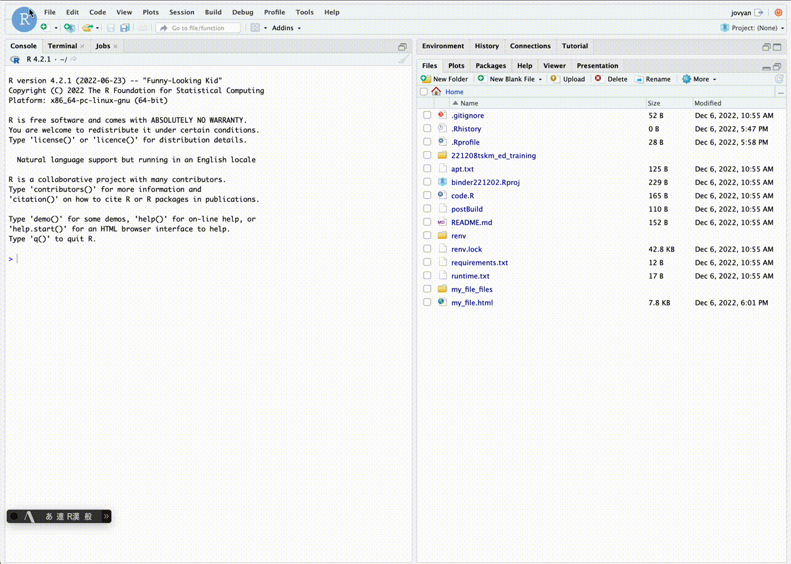
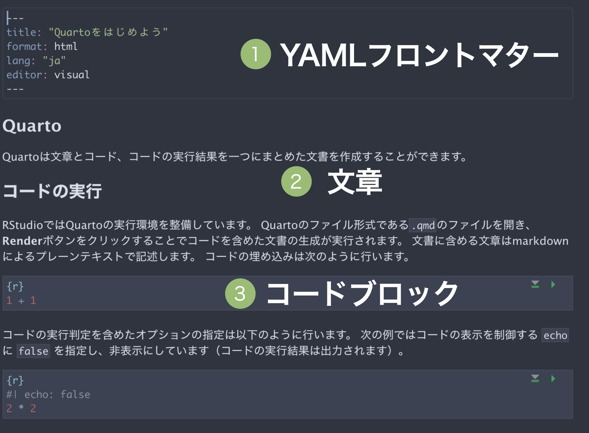

レポート作成
これまでの研修内容で扱ってきた「グラフ」や「データ」、「地図」などは、「情報」として他者に伝える必要に迫られることがあります。 この研修の最後では、こうした情報伝達の方法の一つとして、レポート作成に焦点を当てます。 レポート作成はデータの集計、分析、可視化、地図表現といった作業内容を伝える手段として広く用いられる技能です。 そこには自身が行った作業内容のほかに文章や表・画像が入ります。
このレポートもRを通して作成できます。 このことは、プログラミング言語による制御が可能ということを意味します。 この研修で扱ってきたことをおさらいしながらレポート作成に取りかかりましょう。
1. Quarto
Quartoはオープンソースで開発される文書生成システムの一種です。 Pandocを利用することで、文書中にRやPython、Juliaなどのプログラミング言語の実行結果を含めたり、word、HTML、PDFなどの多様な文書の出力形式をサポートしています。 （この研修資料もまたQuartoで作成されています！）
Quartoの導入には、Quarto本体のインストールが必要ですが、研修の実行環境であるRStudioでは、Quartoによる文書生成の機能が提供され、すぐに試せる状態です。 RStudioのメニューから、File、New Fileの順に進み、Quarto Document...を選択、文書のタイトルや出力形式を選択する画面を立ち上げます。 これらの設定は後で変更が可能できます。 値を入力したらCreateボタンをクリックします。 するとRStudioの一部にQuartoのためのファイルが作成されます（この時点では保存はされていません）。
 Quartoの基本は次の3要素に分かれます。
- 文書の設定を行うYAMLフロントマター
- 文章… HTMLやmarkdown、LaTexによる文字の装飾が可能
- コードブロック… RやPythonなどのコードを記述。実行結果を出力する文書に含められる

それではRStudioからQuartoファイルを作成してみましょう。
Quartoによるレポート作成
ファイルを作成したら、任意の文章やコードを記述してレポートを作っていきます。 ですがまずはQuartoの生成物を表示するところから始めましょう。 qmdファイルを新規作成した状態ですでにコードと文章が含まれた状態だと思います。 そのまま、画面上部にあるRenderボタンをクリックしましょう。 するとQuartoが記述されたRコードの実行と指定された出力形式（format: html）でのファイル作成を行います。